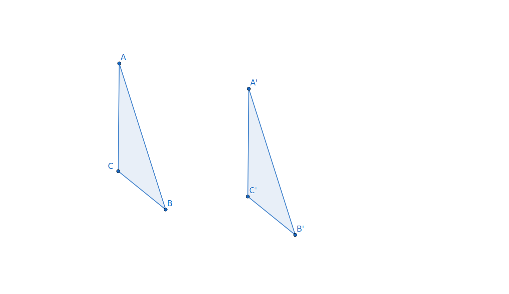

Subsection4.3.1What do we know? What do we wonder?
As we prepare to build on our knowledge of isometries, it is wise to summarize what we know so far. We know that a transformation of a plane is a mapping or function that sends each point \(P\) on the plane to a unique point \(P'\) called its image under the transformation. Some transformations are collineations, meaning that if a set of points all lie on the same line, then their images will also lie on a single line. We have observed that some collineations preserve shape and angle measure and that some collineations that preserve angle measure will also preserve distance. The transformations that preserve all of these, collinearity, angle measure, and distance, are called isometries.
Exploration4.3.1.Reflect and Wonder.
(a)
Write down three things you know about transformations, especially the three isometries we have looked at, namely reflections, translations, and rotations.
Is there anything that was discussed in the first sections on transformations that you need clarity on?
What do you wonder about transformations? What questions remain?
We are now familiar with three types of isometries: reflections, translations, and rotations. Yet many questions remain: Are there other types of isometries? Are there transformations that are not isometries? If two figures are congruent, is there always an isometry mapping one to the other? If so, how do we determine what type of isometry it is?
Although we have not proved this fact, it is true that if we have two congruent figures, there will be an isometry that maps one onto the other. In fact, this notion of congruence as being able to lay one figure on top of the other was how Euclid envisioned congruence. This intuitive definition of congruence preceded the more technical measurement definitions for congruence taught in many middle and high school geometry classes. There has been a shift back to this transformational meaning of congruent in recent years. Perhaps, your teacher adopted this approach.
Our goal in this section and next will be to identify the type of isometry that takes one figure onto a congruent copy. Is it a reflection, a translation, a rotation, or something else? Then having determined the type can we specify the exact action that performs the movement. A good place to start is to identify whether the isometry preserves orientation.
Exploration4.3.2.Distinguishing Between Types of Isometries.
(a)
Imagine that \(\Delta ABC\) is a moveable cutout triangle with a pretty blue pattern on the front face and gray cardboard on the back. We can think of the action of an isometry as moving \(\Delta ABC\) so that it aligns perfectly with its image \(\Delta A'B'C'\text{.}\) Which isometries--reflections, translations, and rotations-- studied so far will keep \(\Delta ABC\) blue side up? Which will turn \(\Delta ABC\) over so that it is cardboard side up? What property is this related to?
How might you tell the difference between a translation and a rotation? Assume that you are given a picture of two congruent triangles \(\Delta ABC\) and \(\Delta A'B'C'\) where the orientation is the same. How do you know whether a translation takes \(\Delta ABC\) to \(\Delta A'B'C'\text{?}\) How do you know whether the isometry is a rotation? Could it be both? or neither?
Subsection4.3.2Defining Objects of Isometries
Now that we can determine whether the isometry mapping one figure onto a congruent image is a reflection, translation, or rotation, we need to identify the defining object(s) of the isometry. Table Table 4.3.1 lists the defining objects for the three isometries we have studied.
Table4.3.1.Defining Objects for Three Isometries
Isometry
Defining Objects
Reflection
Reflecting Line (or mirror)
Translation
Translation Vector
Rotation
Center and Rotational Angle
How do we find the mirror? the vector? the center and angle for an isometry? Although the defining objects will determine how the isometry acts on all points in the plane, we will focus on just a few points \(P\) along with their images \(P'\) in order to find the defining objects. You will want to record your discoveries for later reference.
Exploration4.3.3.Finding Defining Objects of Isometries.
For each isometry, we will observe some properties of the isometry and defining object(s) and then use these properties to locate the defining object(s).
(a)Finding the Mirror of a Reflection.
Refer to Figure 4.2.1 which shows a reflection of \(\Delta ABC\) across line \(m\text{,}\) how is the reflecting line related to each segment connecting a point in the triangle to its image?
Click on the tools available in the top menu of the following interactive. Then sketch the reflecting line for the isometry that takes \(\Delta ABC\) to \(\Delta A'B'C'\) using the tools you think would enable you to determine the exact reflecting line. Do not use guess and check.
Figure4.3.2.An interactive Geogebra applet for finding the mirror of a reflection.
Use the ‘Reflect About Line’ tool in the above app to check that reflecting \(\Delta ABC\) across the line you created results in a triangle that aligns perfectly with \(\Delta A'B'C'\text{.}\)
Write down instructions of how you can create the reflecting line given a triangle \(\Delta ABC\) and its reflected image \(\Delta A'B'C'\text{.}\) The instructions should be detailed enough that others can follow them.
(b)Finding the Vector for a Translation.
In Exploration 4.2.1, you were given a translation vector \(\overrightarrow{EF}\) which indicated the direction and distance that each point should be moved, specifically three units right and one unit down. In the activity \(E\) had the coordinates \((2,4)\) and \(F\) had the coordinates \((5,3)\text{.}\) We will note that we could have chosen a different vector to represent “three units right and one unit down.”
If the point \(E\) had the coordinates \((0,0)\text{,}\) what would the coordinates of \(F\) be so that \(\overrightarrow{EF}\) would represent three units right and one unit down?
If the ending point \(F\) has the coordinates \((-2,2)\text{,}\) what would the coordinates of the starting point \(E\) be so that \(\overrightarrow{EF}\) would represent three units right and one unit down?
Draw, identify, or describe a vector for the translation that takes \(\Delta ABC\) to \(\Delta A'B'C'\) in Figure 4.3.3.

Figure4.3.3.Triangle \(\Delta ABC\) is translated to \(\Delta A'B'C'\)
Write instructions that you or someone else could use to find the translation vector when any figure and its image under a translation are given.
(c)Finding the Center and Angle of a Rotation, part 1.
Figure4.3.4.An interactive Geogebra applet for finding the center and angle of a rotation.
In Figure 4.3.4, an L-pentomino and its image are shown.
Draw or identify the point that is the center of the rotation taking \(ABCDEF\) to \(A'B'C'D'E'F'\text{.}\) How do you know this point is the center?
Determine the angle of this rotation and specify whether the rotation is performed clockwise or counterclockwise.
Hint.
To measure an angle on GeoGebra, be sure to click the vertex of the angle second. For example, \(m\angle BAF\) would be found using the angle tool and clicking \(B\text{,}\)\(A\text{,}\) and \(F\) in that counterclockwise order. If you click the vertices in the clockwise order, you will get \(360-\angle BAF\text{.}\)
(d)Finding the Center and Angle of a Rotation, part 2.
Figure4.3.5.An interactive Geogebra applet for finding the center and angle of a rotation.
The center in Figure 4.3.5 is not easy to identify. Make an initial guess at where the center might be. What are some things we could try?
Perhaps the segments \(\overline{AA'}\text{,}\)\(\overline{BB'}\text{,}\) and \(\overline{CC'}\) might provide information. Sketch these three line segments. Do they help?
Provided GeoGebra tools will allow you to find perpendicular lines, perpendicular bisectors, angle bisectors, circles, angle measures, and lengths. Any ideas of what we might try?
Since we have sketch the segments \(\overline{AA'}\text{,}\)\(\overline{BB'}\text{,}\) and \(\overline{CC'}\text{,}\) let’s use the perpendicular bisector tool to find the perpendicular bisector of each segment. What do you notice?
Create point \(E\) as a candidate for your center. Verify that \(m\angle AEA'=m\angle BEB' =m\angle CEC'\text{.}\) What is the angle of rotation?
Finally, use the Rotate around Point tool to check your work.
Write instructions to yourself and others on how to find the center and angle of a rotation when you are given a picture of a figure and its rotated image and they do not share a vertex.
Subsection4.3.3What have we learned?
In Table 4.3.1, the definining objects for each transformation were given. Copy this table into your notes and add two new columns. The third column should be titled Orientation and the entries will be either ‘reversed’ or ‘same’. The final column will be Locating Object(s). Here you will write down the instructions for finding each of the defining objects in Exploration 4.3.3; the last item in each task.